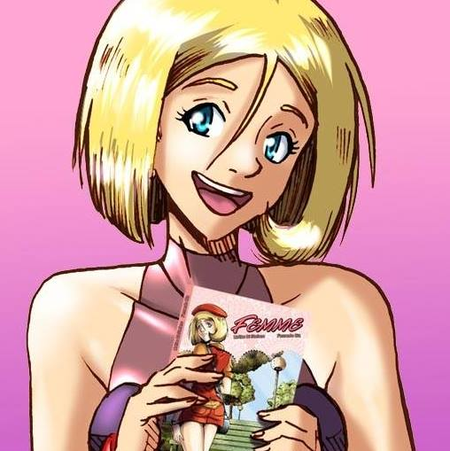

|
|
||
|  |
Historieta creada por Matías Di Stéfano y dibujada por Fernando Biz. Trata la vida de Charlotte desde que conoce a una extraña chica de la cual se enamora profundamente con locura y obsesión |
|

Informacion de Di Stefano. Fan Page |
Fernando Biz, dibujante de historietas, Guionista, jugador casual de video juegos y mirador compulsivo de anime. Creador de Bienvenidos a República Gada, Hot Lady Nadia y Dibujante de Femme. Fan Page |
Unico tomito :P |